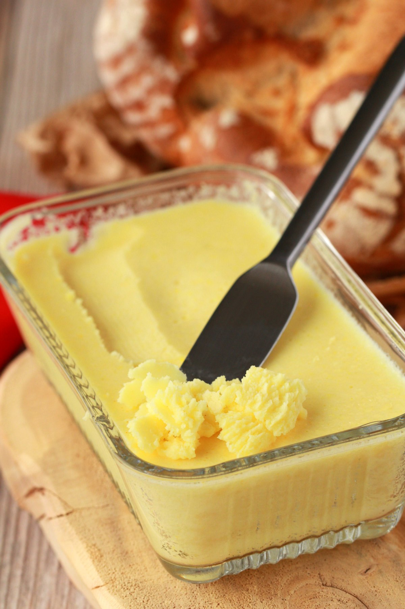

Vegan Butter

Description
I can't believe it's not butter.
I can believe that it's mostly coconut oil and soy milk. A match made in heaven, if
you ask me, a saturated fats goblin.
Ingredients
- 1 cup Refined Coconut Oil
- 2 Tbsp Canola Oil
- 1/3 cup Unsweetened Soy Milk
- 1 tsp Apple Cider Vinegar
- 1 tsp Nooch (Nutritional Yeast Flakes)
- 1 Small Pinch Turmeric
- 1/2 tsp Salt
Steps
-
Add melted refined coconut oil to the blender jug along with the canola oil.
-
Add the apple cider vinegar to the unsweetened soy or almond milk and stir
in so that it curdles into buttermilk. Add the buttermilk to the blender.
-
Add the nutritional yeast, small pinch of turmeric and salt.
-
Blend very well until smooth.
-
Pour out into a butter dish and refrigerate until set.
-
Remove from the fridge to thaw for a few minutes if using on fresh bread
or creaming with sugar for baking.